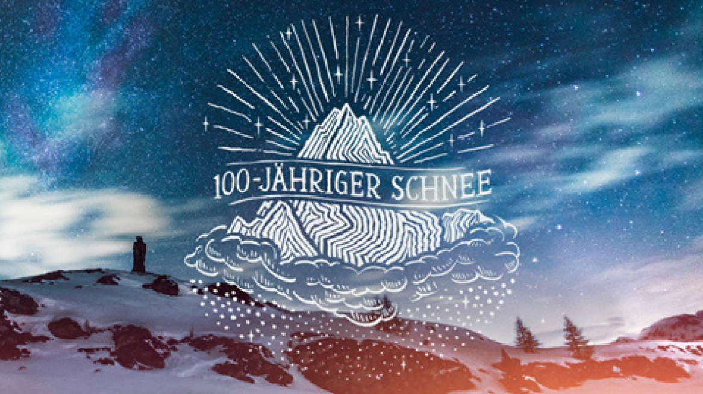

Contexta: Der erste Winter geht nie vergessen
Bald ist wieder Winter im Wallis – die schönste Zeit des Jahres. Deshalb will Contexta in Zusammenarbeit mit Valais/Wallis Promotion die Vorfreude wecken, indem sie den ältesten Menschen im Wallis ein Geschenk machte.
Dieses sollte Erinnerungen an ihren ersten Winter wachrufen. Denn wer kennt die magische Jahreszeit am besten, wenn nicht Menschen, die sie bereits 100-mal, 96-mal oder auch 101-mal miterlebt haben? In einem emotionalen Film sehen wir, wie den ältesten Bewohnerinnen und Bewohnern des Kantons das spezielle Geschenk überreicht wird: Schnee aus ihrem ersten Winter. Schnee, der in ihrem Geburtsjahr gefallen ist. Dies einerseits zum Dank, dass auch sie das Wallis während ihrer Lebzeiten mitgeprägt haben und andererseits, um an ihren Erinnerungen an diese Zeit teilzuhaben. Sie weiter zu tragen. Valais/Wallis Promotion interessiert aber nicht nur die Erinnerungen der ältesten Menschen des Wallis, sondern auch die erlebten Momente aller, die die schönste Zeit des Jahres geniessen. Unter #meinWinterimWallis können deshalb Wintergeschichten geteilt werden und die besten Beiträge gewinnen einen 3-tägigen Aufenthalt im Wallis.